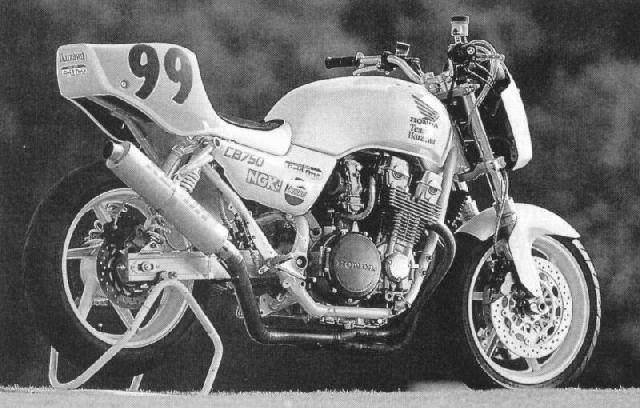
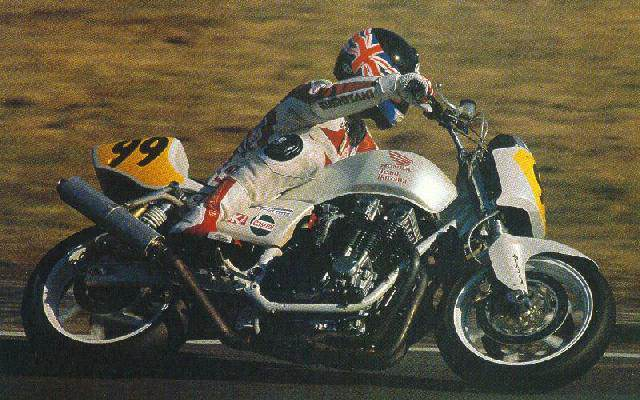
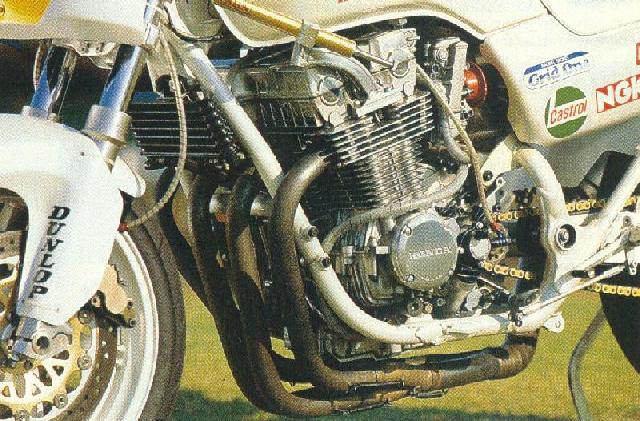

Viking’s Note: This document is the first two sections of an article from Australian Motorcycle News Vol. 44, No. 6 (July 29 – Aug 11, 1994) and is reproduced without their permission. But I’ve fixed whatever grammatical errors I found…
Tetsu Ikuzawa unlocked the door to the Honda parts bin to build the ultimate Project CB Seven Fifty. Alan Cathcart recently gave it the ultimate test – along with his leathers…

Before he becase the first Japanese driver to reach the ‘big time’ on car racing’s world stage, Tetsu Ikuzawa’s racing career was on two wheels – as part of a Japanese championship Honda works team. It’s natural therefore that on his return to two wheels as a team owner Tetsu should have forged an even closer relationship with the company.
It was inevitable that when Ikuzawa-san decided to race in the popular Naked Bike class himself, he should choose a Honda on which to do it – even if this was very much against the fashionable trend in a class dominated by Kawasaki Zephyrs.
“I am a Honda man.” states Tetsu proudly. “I had to challenge them with a Honda, so we made a naked racer based on the CB Seven Fifty, and used as many Honda parts as possible.”
Anyone can build it
Although the team’s distinctive pearl white CB has all the appearance of an HRC-crafted Nudie racer, it’s nothing of the kind. Instead, Tetsu enlisted the services of a leading race engineering shop – Tokyo’s Grid One – whose boss Yoshita-san took a stock CB and crafted the superb-looking bike seen here.
Fortunately, the CB’s 16-valve Honda motor is essentially derived from the mid-80s CBX750 model, so instead of the retro-technology being 15 years old, it’s only 10 years behind the times of current Superbike racing!
Moreover, as I recall from testing Moriwaki’s potent CBX750-powered F1 racer eight years ago, there was a pretty effective HRC race kit for the air-cooled engine.
Not surprisingly, this kit forms the basis for Ikuzawa CB’s race-tuned engine. The stock 67 × 53mm engine has been over-bored 1mm (as permitted) to 770cc using CB750SC kit pistons, with these fitted to a rebalanced stock crank and standard rods. The cylinder head has been ported and flowed by Yoshita, who fitted CBX750 valves, springs and camshafts.
A standard Honda CDI ignition is fitted, but with an altered curve, while the single biggest performance modification is the fitting of a six-speed close-ratio gearbox to replace the five-speeder from the soft-spec CB Seven Fifty.
Even the standard 35mm CV carbs were originally retained for early dyno work, in which form the engine delivered 95ps (at 9350rpm) at the rear wheel.
However, the addition of a set of 35mm Keihin FCR flatslides added another 7ps, as well as making the 102ps engine notably crisper in reponse and pick-up, especially when also running a special Grid One exhaust system with an RC30 HRC kit silencer.

Getting it rolling
Turning the retro-roadster into a race-ready piece of hardware entailed almost as many chassis mods, though of course the stock CB Seven Fifty frame is retained – with all unnecessary bracketry, etc stripped off.
The 750 forks have been ditched in favour of a sturdier 41mm set of Showas from a CB1000, together with the triple clamps. The reduced offset (35mm compared to the CB Seven Fifty’s 45mm) delivers much more trail (107mm versus 91mm), while retaining the stock 26.5-degree rake.
The extruded allow swingarm (twin-shock, in keeping with the Naked class regulations) comes from Honda’s CB400, but has been shortened by 30mm to reduce the wheelbase and improve traction by transferring weight bias rearwards (weight distribution is 51/49 percent). It has also been widened to allow the use of a CBR600-sourced 5.00-inch rear rim.
Surprisingly, perhaps, the stock shocks are retained, but with the bottom mount moved rearwards 33mm to give a slightly softer, more progressive ride. This was the hot tip back in the high-barred days of ’70s naked Superbike racing…
With the shorter swingrm, the rangey wheelbase is now a more manageable 1460mm, whole total half-dry weight (with oil, no fuel) is 183kg compared to the street Seven Fifty’s 213kg.
Stopping all this is a pair of RC30 310mm Nissin disks (mounted to a VFR400R 3.50 × 17-inch front wheel) with a CBR1000 rear disk and caliper.
To finish it all off, Team Ikuzawa’s own nose fairing, front mudguard, seat and flat handlebars are fitted, with NSR250R footrests.
As an example of what you can construct after careful perusal of the Honda parts list, Tetsu’s Zephyr Zapper takes some beating!
